Back
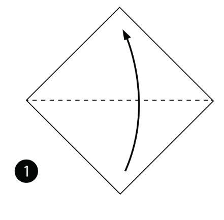
STEP1:Fold the paper in half.
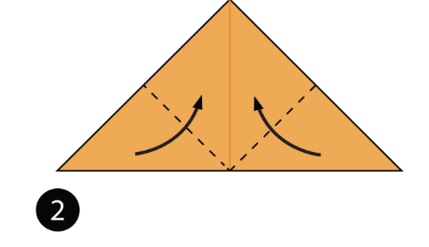
STEP2:Fold both sides up along the dotted lines.
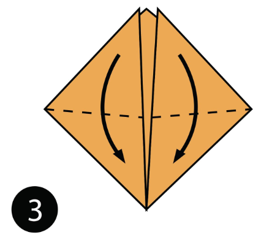
STEP3:Fold both sides down along the dotted lines.
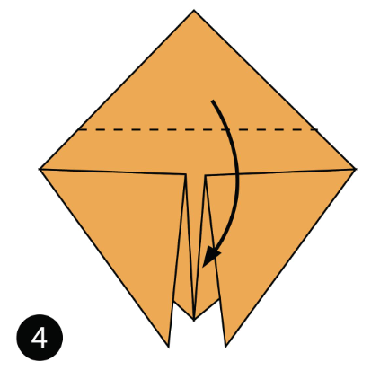
STEP4:Fold the top layer of paper down along the dotted line.
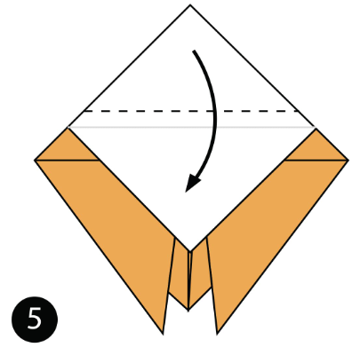
STEP5: Turn the paper over.
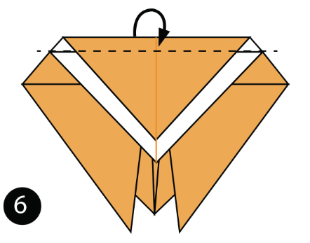
STEP6:Fold the bottom layer of paper down along the dotted line.
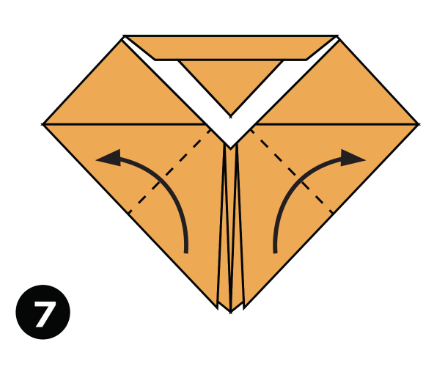
STEP7: Fold the top of the paper down along the dotted line.
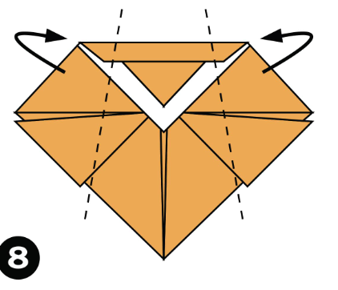
STEP8:Fold both sides out along the dotted lines to make the wings
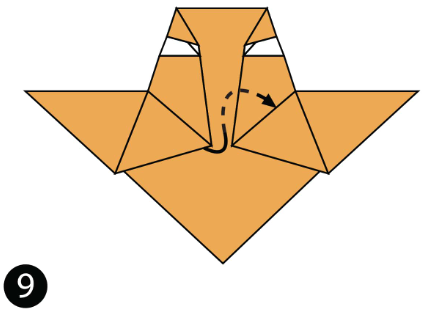
STEP9:Fold both sides of the paper behind the model.
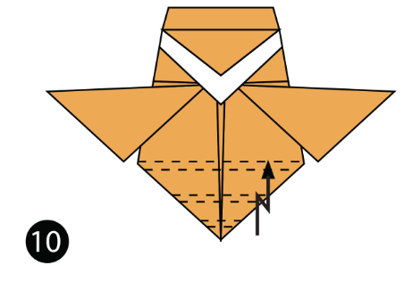
STEP10:Turn the paper over.
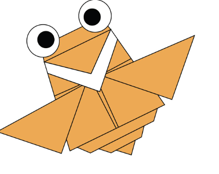
STEP11:complete cicida.
here is a vedio for your reference